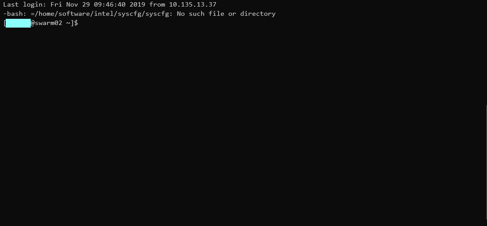

Linux下连接远程电脑并传输文件
Linux下使用SSH远程连接超算中心
背景
有时候计算量比较大，需要使用超算中心的电脑进行计算，或者需要远程连接另一台Linux电脑。如果是在windows下，使用xshell和xftp可以进行连接和文件的交互，那么Linux下如何操作呢，Linux只需要使用一下两个命令即可完成。
如果您是Win10的话，可以尝试用WSL。
SSH
远程连接电脑只需输入
1 | ssh username@ipaddress |
username就是用户名了，ipaddress就是你远程主机的IP，这里我们认为是超算中心的IP
有一些可选参数
1 | -X : 调用图形界面 |
之后输入username的密码就可以了，第一次登陆系统会给出提示，真实性无法确认，yes就行了
我们尝试连接到武汉大学超算中心

登录成功了
SCP
我们如果在超算进行计算，还需要文件交互。在自己电脑上输入
1 | scp filedirA username@ipaddress:filedirB |
就可以实现把文件A传到超算的目录B
反之要下载超算的文件，只需要交换前后顺序就可以